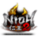
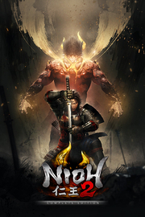

 Nioh 2 – The Complete Edition
Detalles
|  | |
| Tiempo de juego | No Jugado |
| Última actividad | Nunca |
| Añadido | 11/5/2024 22:37:13 |
| Modificado | 11/6/2024 22:30:18 |
| Estado de finalización | No Jugado |
| Librería | Playnite |
| Fuente | 4TB TANK |
| Plataforma | PC (Windows) |
| Fecha de lanzamiento | 2/5/2021 |
| Puntuación de la Comunidad | 87 |
| Puntuación de la Crítica | 86 |
| Puntuación de usuario | |
| Género | Acción Rol |
| Desarrollador | KOEI TECMO GAMES CO., LTD. |
| Editor | KOEI TECMO GAMES CO., LTD. |
| Característica | Cloud Saves Compat. Parcial Con Mando Cooperativo Cooperativo En Línea Cromos De Estadísticas HDR Disponible Logros De Multijugador Préstamo Familiar Tablas De Clasificación De Un Jugador |
| Enlaces | Punto de encuentro Discusiones Guías Noticias Página de la tienda PCGamingWiki Logros |
| Tag | Acción Ambientales Buena trama Cooperativos Difíciles Fantasía Fantasía oscura Hack and slash Históricos Medievales Multijugador Oscuros Personalización de personajes Protagonista femenina Rol Rol japonés Sangriento Tipo «Dark Souls» Un jugador Violentos |
Descripción

UNLEASH YOUR DARKNESS
Vive la emoción de enfrentarte a hordas de temibles yokai en este brutal RPG de acción masocore. Crea a tu protagonista original y emprende una aventura a través de devastados paisajes del Japón del período de Sengoku.
Al igual que la anterior entrega, que gozó de gran popularidad entre críticos y jugadores por igual, Nioh 2 ofrece una historia original profunda centrada en los comandantes militares del período de Sengoku. Además, en Nioh 2 puedes ir más allá del anterior juego y desatar el nuevo poder de Forma Yokai, con el que te transformarás para hacer frente al poder de los mayores yokai. Otra novedad de Nioh 2 es que tus enemigos pueden crear un Reino Oscuro, lo que eleva las apuestas y ofrece un nuevo reto para tu personaje. Enfréntate a temibles monstruos y desata tu oscuridad en el mundo de Nioh 2.

■Contenido incluido
Nioh 2: Complete Edition incluye todo el contenido de Nioh 2 y sus 3 expansiones de DLC, The Tengu’s Disciple, Darkness in the Capital, and The First Samurai.
◆ The Tengu’s Disciple
En The Tengu’s Disciple, tu protagonista viaja al final del período de Heian, en el que los clanes Genji y Heike luchaban brutalmente entre ellos. Vive la batalla que sirve de prólogo a la historia de Nioh 2.
◆ Darkness in the Capital
Darkness in the Capital transcurre en pleno período de Heian, la era en la que los espíritus malignos y los yokai asolaban Japón. Tu protagonista vuelve al período y se dirige a la capital, descubriendo la conexión entre un pasado cada vez más lejano y el presente del que viene.
◆ The First Samurai
The First Samurai trae al protagonista al paso de Suzuka durante el comienzo del período de Heian. En esta fantástica tercera expansión de Nioh 2, el protagonista hará frente a su némesis, Otakemaru, una vez más.
■Funciones PC:
- Personalización completa de teclado y ratón- Compatibilidad con mando
- Compatibilidad con 4k Ultra HD*
- Compatibilidad con pantalla panorámica*
- Compatibilidad con monitor HDR y 144Hz*
- 60/120 FPS*
*Se necesita un monitor/componentes de PC compatibles con estos modos.
■Steam ver. Exclusive Bonus

Recibe el Casco de Valve como bonificación exclusiva por la versión para Steam de Nioh 2.
Accede al menú del Santuario y elige la pestaña Ventajas para recibirlo.